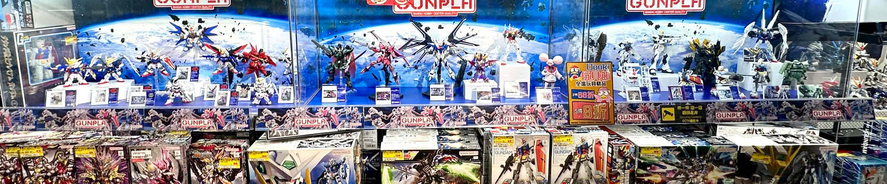
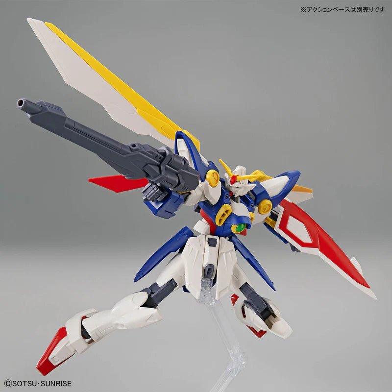
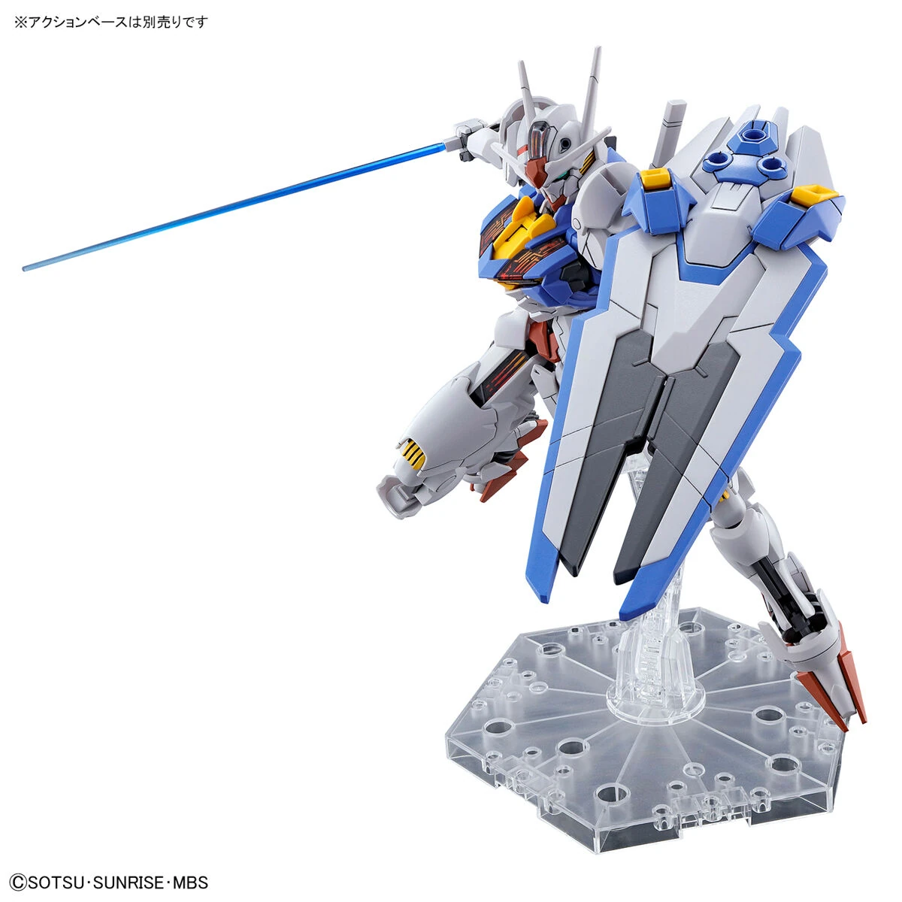
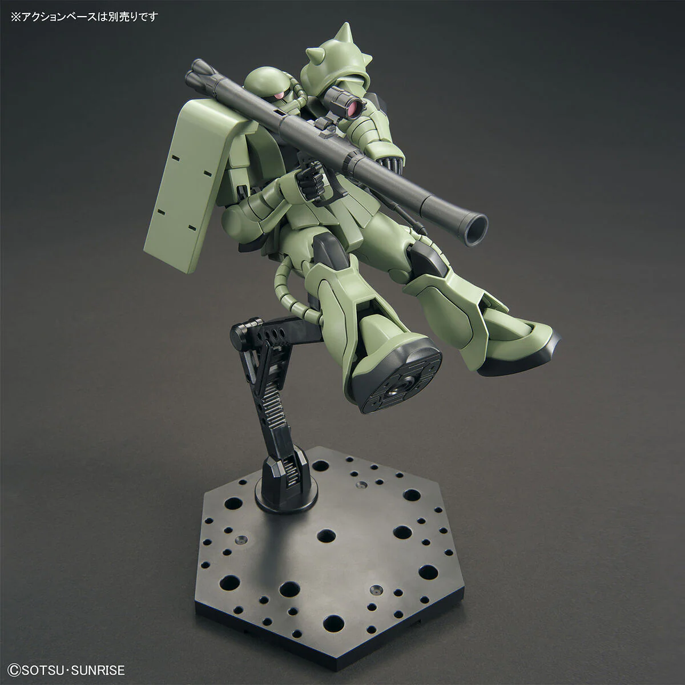
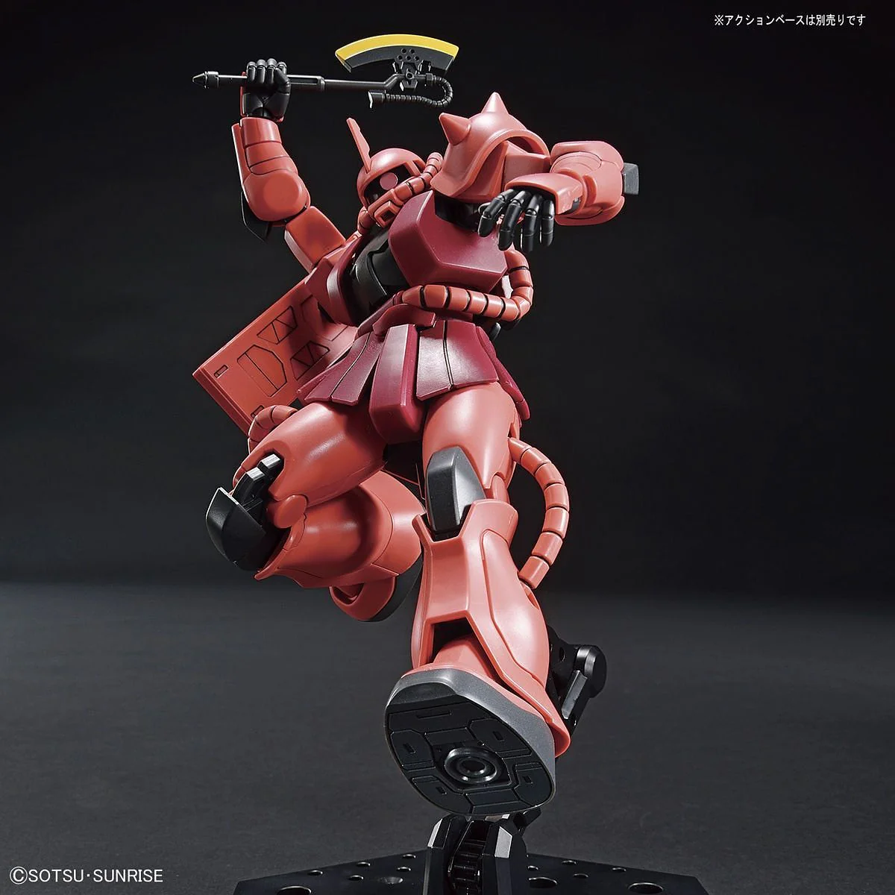
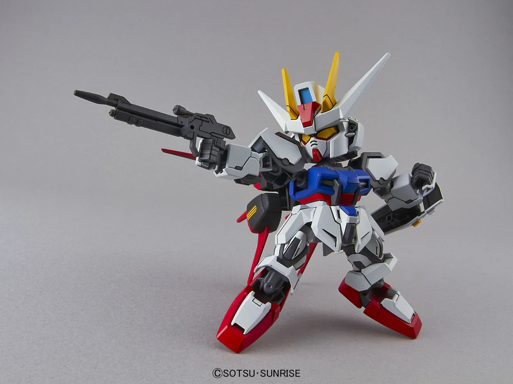
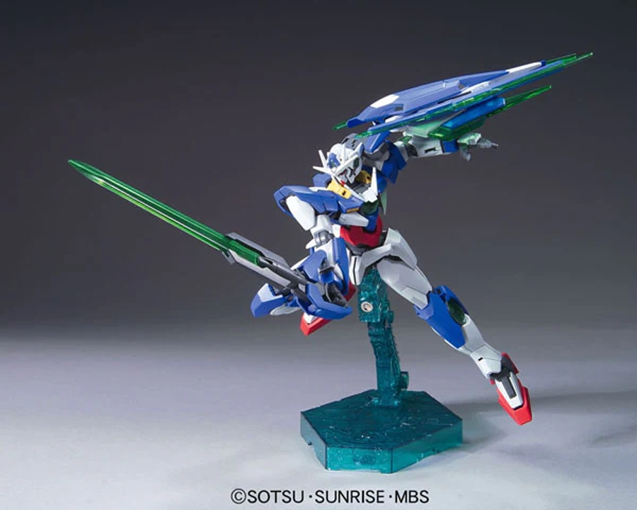
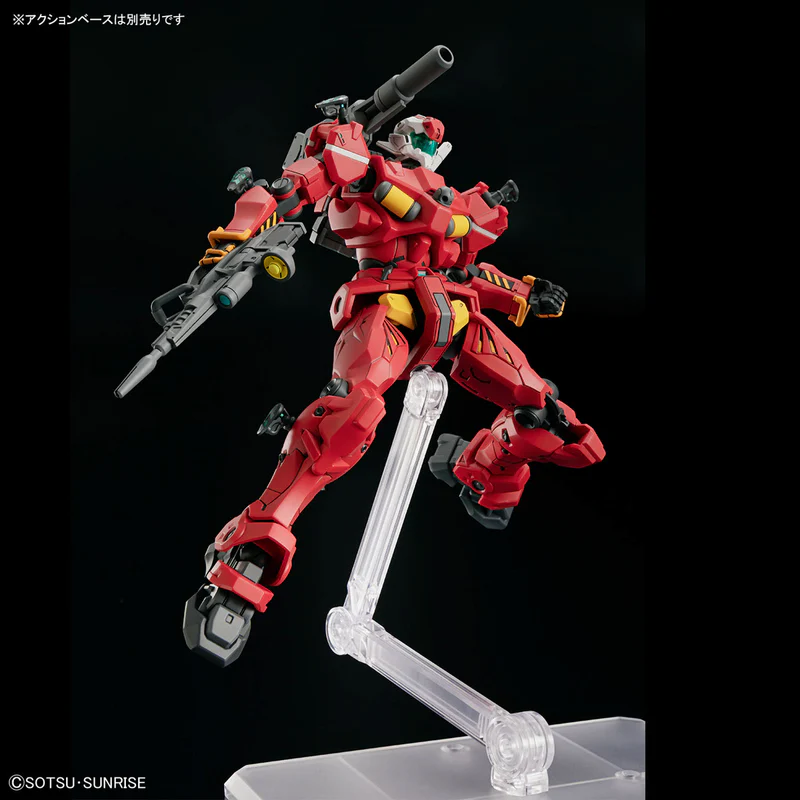
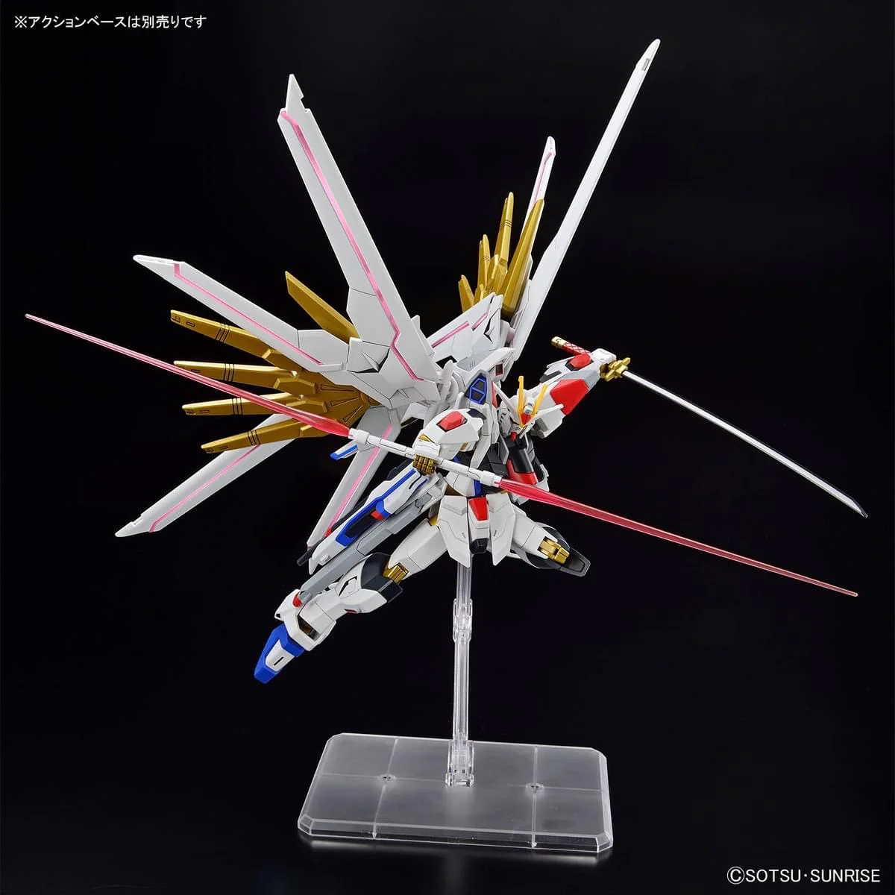
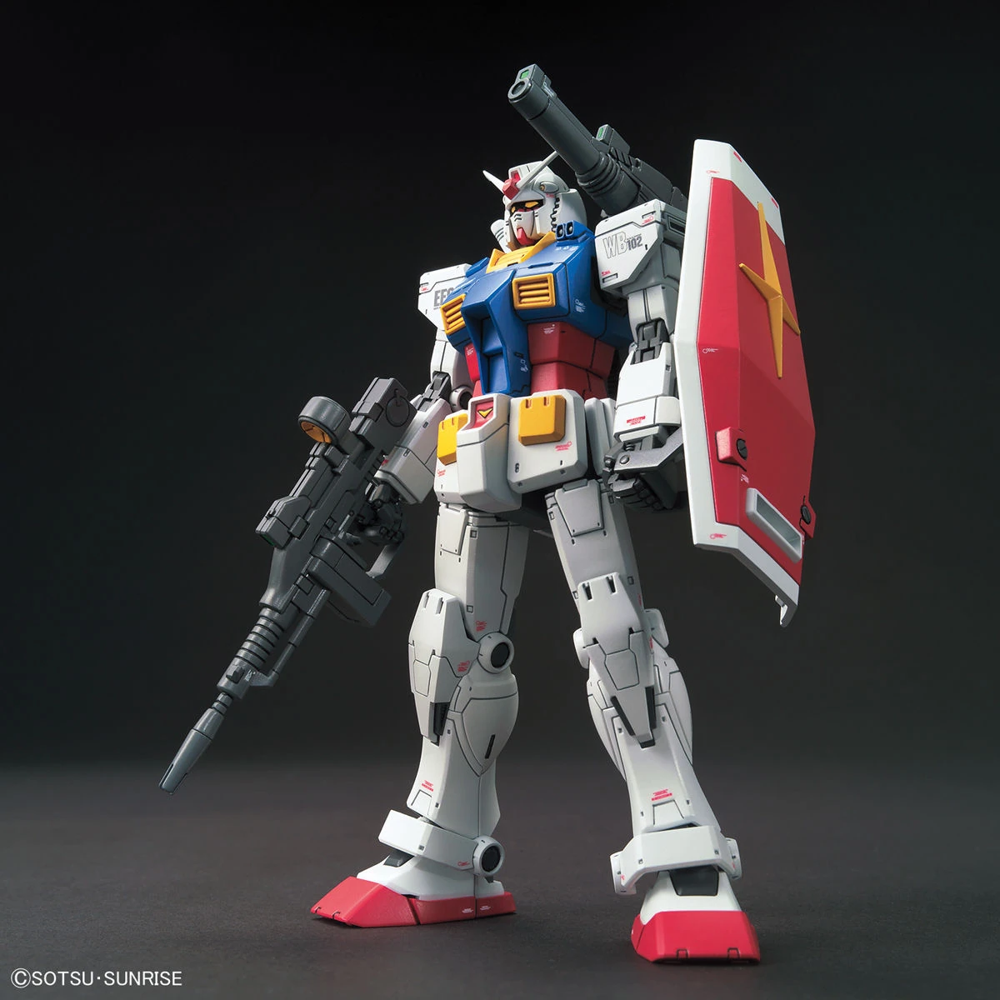

THE BEST GUNPLA KITS FOR BEGINNERS
Over the years, Gunpla has gotten more and more accessible to newcomers, but with nearly 2,000 different Gunpla models, the process of choosing one to start with can still be difficult or intimidating. That's why I've curated a list of my recommended model kits for beginners to start with based on affordability, the build process, and the final result: Would you still buy this kit, even if it wasn't your first?
FOREWORD
I recommend reading (or skimming through) this article about Gunpla Grades and Scales first, as it will brief you on some of the terminology used throughout this article. However, you should be able to grasp the basics even without it.
Realistically, any kit—especially the newer ones—can be built by a beginner so long as you follow the instructions. However, more complex (note: expensive) kits with many tiny fragile pieces can be daunting, especially for those without experience in a model building hobby. Starting small and moving up from there is the sensible thing to do!
Entry Grade Wing Gundam

Image Source: Bandai
Build Difficulty: ★☆☆☆☆
Design: ★★☆☆☆
Average Pricepoint: $12 CAD
The obvious starting point for Gunpla is with the Entry Grade line specifically designed for beginners. The Entry Grade Wing Gundam requires no tools to build—the pieces snap directly off of the runners, allowing for a simple and fun snap-build.
Despite the limited articulation and detail, it's hard to really fault this kit; for the price, this fully color-separated, poseable model makes for a great entry into Gunpla, or as an inexpensive gift for anyone considering it.
Note: Any of the Entry Grades are a good first step into Gunpla. I included my personal favorite, naturally.
High Grade The Witch from Mercury Gundam Aerial

Image Source: Bandai
Build Difficulty: ★★☆☆☆
Design: ★★★★☆
Average Pricepoint: $22 CAD
One of the newer kits, the High Grade Gundam Aerial strikes a balance between being an intuitive build without being a boring one; there aren't any annoying parts in the kit, so you can fully focus on the build process. The kit has good articulation despite the small number of parts and looks great even without extra detail work.
What gains this kit my recommendation are its aesthetics: It's a very unique design fully implemented into 1/144 scale; the 'GUND-BITs' have functionality as a shield, attachments, or flying drones, and the foil stickers underneath clear parts stand out nicely. With many accessories and effects, it makes for a great display piece when completed.
High Grade Universal Century Zaku II / Char's Zaku II (Revive)


Image Source: Bandai
Build Difficulty: ★★☆☆☆
Design: ★★★★☆
Average Pricepoint: $20 CAD
Choosing just one of the many great HGUC Revive kits was difficult, but I'm recommending this one partially out of personal bias; these antagonist mobile suits are just too cool to leave out! I'm putting both kits into one entry as the differences lie almost entirely within their color. These HG Zaku II “Revive” kits have great articulation and hold a pose without issue. They come with soft plastic skirt armor pieces which allow for the legs to move even further.
These are some of the best value kits for their price point. The kits include multiple sets of hands and weapons for different poses. If you're looking for something to pair with your RX-78-2, or just want an affordable yet fun build, these are among my top choices.
Super Deformed Aile Strike Gundam

Image Source: Bandai
Build Difficulty: ★☆☆☆☆
Design: ★★☆☆☆
Average Pricepoint: $8 CAD
The cheapest entry on this list, the Super Deformed line are chibi versions of Gundam designs. With a small parts count, any of the Super Deformed models can go on this list, so really, pick whichever one you like best. I personally like how the Aile Strike Gundam translates into a chibi design, it looks like it's trying so hard to be cool (success of which is debatable).
Be warned that a lot of the color separation on these kits comes from applying stickers, which might be a bit annoying to apply.
High Grade Gundam 00 QAN[T]

Image Source: Bandai
Build Difficulty: ★★★☆☆
Design: ★★★☆☆
Average Pricepoint: $20 CAD
Due to their age, the HG00 line has some high highs and some mediocre mediocres, but the 00 QAN[T] (pronounced 'Quanta') still holds up solidly. You don't pick up a kit from 2010 for fantastic engineering but for badass designs from the source material.
While the build is pretty standard, the finished result is a sleek, stylish mobile suit that looks great in many poses. The designers must have known, since this is one of the rare Gunpla kits that comes with a display base included, which is a big part of its inclusion on the list.
The pretty sizable number of color-correcting stickers in the kit do detract from it, but it's a solid recommendation for those who want to create dynamic air poses right out of the gate.
High Grade GQuuuuuuX Light-Type Guncannon

Image Source: Bandai
Build Difficulty: ★★★☆☆
Design: ★★★★★
Average Pricepoint: $30 CAD
You counted right, that's six 'u's in the name.
The GQuuuuuuX series features some unique takes on iconic Gundam designs, and this take on the classic Guncannon—one of the more straightforward kits in the line—is one of my favorites. The HGGQ line is absolutely stellar with small details and articulation, which make them amazing for posing and display.
This kit is a great way to learn how to panel line, as just a little bit of ink can bring out all of the details in the kit. While the number of stickers isn't many, they are pretty tiny. I'd pick up some hobby tweezers (or just find a pair lying around) to help apply them.
High Grade SEED Mighty Strike Freedom Gundam

Image Source: Bandai
Build Difficulty: ★★★☆☆
Design: ★★★★★
Average Pricepoint: $36 CAD
A bit on the pricier side, the Mighty Strike Freedom Gundam certainly lives up to its name. The newer High Grade SEED models are highlighted for their impressive poseability; this thing can hit some crazy poses despite being pretty back-heavy!
Including two sets of hands, multiple weapons, and a bunch of moving parts on the main build itself, this kit is perfect for those who want to build something cool and flashy immediately.
High Grade The Origin RX-78-2 Gundam

Image Source: Bandai
Build Difficulty: ★★★★☆
Design: ★★★★★
Average Pricepoint: $33 CAD
It only feels right to end off the list with the iconic RX-78-2 Gundam. Aesthetically, the Origin version is a slightly different take from the standard RX-78-2 design with a different weapon loadout and more muted colors. The real star of the show is the detailing on the kit. The amount of surface detail is fantastic for a High Grade kit, and it even comes with clear sticker decals to add even more detail.
This kit is a great one to test fundamental detail-up skills such as panel lining and applying sticker decals, and the final result is an awesome modern take on a classic design that holds great presence on any display.
Afterword
The most important part of choosing your first kit is to pick one that you like, whether it's from source material or pure aesthetics; I picked up the HG Gundam Aerial because I liked YOASOBI's opening song for the Witch from Mercury anime, even before engaging with any other Gundam media!
I did my best to include a wide variety of kits in this article. Many of the kits within the same line as the ones included will be just as solid, so I chose to include my favorites from each line.
The star ratings are relative to the context of the article; The difficulty of these kits are nowhere near a Master or Real Grade, but a bigger difference in rating better illustrates the differences between them.